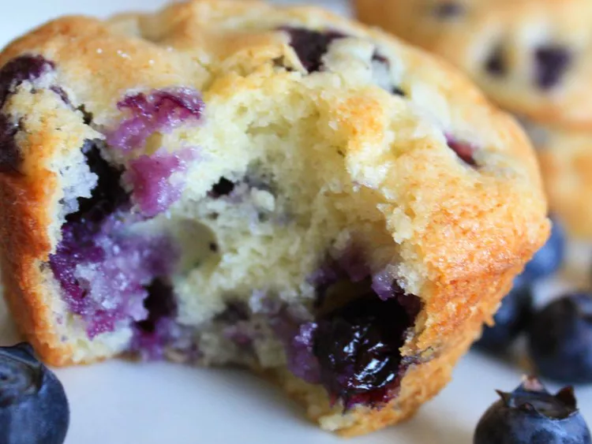

Best of the Best Blueberry Muffins

Description
Big blueberry muffins with a crusty sugar topping. This is a recipe I got from my grandma. The blueberries and the sweet batter are fabulous together — favorites of all who have tried them. They are quick and easy and made with just a few ingredients. Remember to use paper liners!
Ingredients
- nonstick cooking spray
- 1 ¼ cups white sugar
- ½ cup unsalted butter
- ½ teaspoon salt
- 2 large eggs
- 2 cups all-purpose flour, divided
- 2 teaspoons baking powder
- ½ cup buttermilk
- 1 pint fresh blueberries - rinsed, drained and patted dry
- 2 tablespoons white sugar
Steps
- Position rack in the middle of the oven. Preheat the oven to 375 degrees F (190 degrees C). Spray the top of a muffin pan with nonstick spray, and line with paper liners.
- Cream together 1 1/4 cups sugar, butter, and salt in a large bowl until light and fluffy. Beat in eggs one at a time.
- Mix together 1 3/4 cups flour and baking powder. Beat in the flour mixture alternately with the buttermilk into egg mixture, mixing just until incorporated.
- Crush 1/4 of the blueberries, and stir into the batter. Mix the rest of the whole blueberries with the remaining 1/4 cup flour, and fold into the batter. Scoop into muffin cups. Sprinkle tops lightly with sugar.
- Bake in the preheated oven until golden brown and tops spring back when lightly tapped, about 30 minutes.